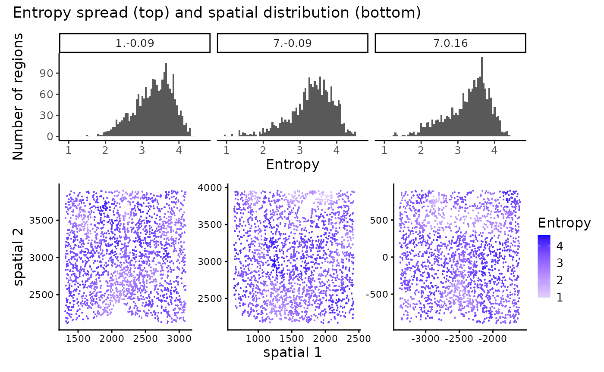

ClustSIGNAL tutorial
Pratibha Panwar, Boyi Guo, Haowen Zhou, Stephanie Hicks, Shila Ghazanfar
2024-12-13
Source:vignettes/clustSIGNAL.Rmd
clustSIGNAL.RmdOverview
In this vignette, we will demonstrate how to perform spatially-resolved clustering with ClustSIGNAL. Following this, we will explore the clusters using pre-defined metrics like adjusted rand index (ARI) and normalized mutual information (NMI), as well as spatial plots to visualize the clusters. We will also display the use of entropy measures generated as a by-product of ClustSIGNAL process in understanding the tissue structure of a sample. In the end, we will explore multisample analysis with ClustSIGNAL, and learn how to use the individual functions in the package to perform a step-by-step clustering analysis with ClustSIGNAL.
Single sample analysis with ClustSIGNAL
Here, we use the SeqFISH mouse embryo dataset from Lohoff et al, 2021 , which contains spatial transcriptomics data from 3 mouse embryos, with 351 genes and a total of 57,536 cells. For this vignette, we subset the data by randomly selecting 5000 cells from Embryo 2, excluding cells that were manually annotated as ‘Low quality’.
We begin by creating a SpatialExperiment object from the gene expression and cell information in the data subset, ensuring that the spatial coordinates are stored in spatialCoords within the SpatialExperiment object. If the data are already in a SpatialExperiment object, then the user can directly run ClustSIGNAL, after ensuring that the basic requirements like spatial coordinates, normalized counts, and unique cell names are met.
data(mEmbryo2)
# this will load me_expr and me_data objects, containing gene expression
# logcounts and cell metadata, respectively, to your environment
# to create a SpatialExperiment object we need gene expression, cell metadata,
# and cell locations
spe <- SpatialExperiment(assays = list(logcounts = me_expr), colData = me_data,
# spatialCoordsNames requires column names in
# me_data that contain xy-coordinates of cells
spatialCoordsNames = c("X", "Y"))
spe## class: SpatialExperiment
## dim: 351 5000
## metadata(0):
## assays(1): logcounts
## rownames(351): Abcc4 Acp5 ... Zfp57 Zic3
## rowData names(0):
## colnames(5000): embryo2_Pos29_cell100_z2 embryo2_Pos29_cell101_z5 ...
## embryo2_Pos50_cell97_z5 embryo2_Pos50_cell99_z5
## colData names(4): uniqueID pos celltype_mapped_refined sample_id
## reducedDimNames(0):
## mainExpName: NULL
## altExpNames(0):
## spatialCoords names(2) : X Y
## imgData names(0):For running ClustSIGNAL, we need to know the column name in colData of the SpatialExperiment object that contain the sample labels. Here, the sample labels are in the ‘sample_id’ column.
spe |> colData() |> colnames() # to list the column names in the metadata## [1] "uniqueID" "pos"
## [3] "celltype_mapped_refined" "sample_id"Running ClustSIGNAL on one sample
Next, we run ClustSIGNAL using the sample labels we identified earlier. The simplest ClustSIGNAL run requires a SpatialExperiment object, one variable holding colData column name of sample labels, and the type of output the user would like. Other parameters that can be modified include dimRed to specify the low dimension data to use, batch to perform batch correction, batch_by to indicate sample batches contributing to batch effect, NN to specify the neighbourhood size, kernel for weight distribution to use, spread for distribution spread value, sort to sort the neighbourhood, threads to specify the number of cpus to use in parallel runs, and clustParams to specify clustering parameters.
Furthermore, the adaptively smoothed gene expression data generated by ClustSIGNAL could be useful for other downstream analyses and will be accessible to the user if they choose to output the final SpatialExperiment object.
set.seed(100) # for reproducibility
samples <- "sample_id" # column name containing sample names
# the simplest run of ClustSIGNAL requires data in a SpatialExperiment object,
# with column name for sample labels specified, along with the type
# of output to generate (clusters, neighbours, and/or final spe object).
res_emb <- clustSIGNAL(spe, samples, outputs = "a") ## [1] "Calculating PCA. Time 05:15:05"
## [1] "ClustSIGNAL run started. Time 05:15:06"
## [1] "Initial nonspatial clustering performed. Clusters = 11 Time 05:15:07"
## [1] "Nonspatial subclustering performed. Subclusters = 50 Time 05:15:08"
## [1] "Regions defined. Time 05:15:11"
## [1] "Region domainness calculated. Time 05:15:11"
## [1] "Smoothing performed. NN = 30 Kernel = G Spread = 0.05 Time 05:15:12"
## [1] "Nonspatial clustering performed on smoothed data. Clusters = 16 Time 05:15:13"
## [1] "ClustSIGNAL run completed. 05:15:13"
## Time difference of 8.161615 secsThis returns a list that contains a dataframe of cluster names, a matrix of cell labels from each region’s neighbourhood, and a final SpatialExperiment object.
res_emb |> names() # listing the names of the outputs generated## [1] "clusters" "neighbours" "spe_final"The cluster dataframe contains cell labels and their cluster numbers allotted by ClustSIGNAL.
res_emb$clusters |> head() # cluster data frame has cell IDs and cluster labels## Cells Clusters
## 1 embryo2_Pos29_cell100_z2 13
## 2 embryo2_Pos29_cell101_z5 13
## 3 embryo2_Pos29_cell104_z2 13
## 4 embryo2_Pos29_cell104_z5 13
## 5 embryo2_Pos29_cell105_z2 13
## 6 embryo2_Pos29_cell108_z5 13The final SpatialExperiment object contains the adaptively smoothed gene expression data as an additional assay, as well initial clusters, entropy values, and ClustSIGNAL clusters.
# for convenience with downstream analyses, we can replace the original spe
# object with the one generated by ClustSIGNAL. This does not lead to any loss
# of information as ClustSIGNAL only adds information to the spe object.
spe <- res_emb$spe_final
spe ## class: SpatialExperiment
## dim: 351 5000
## metadata(0):
## assays(2): logcounts smoothed
## rownames(351): Abcc4 Acp5 ... Zfp57 Zic3
## rowData names(0):
## colnames(5000): embryo2_Pos29_cell100_z2 embryo2_Pos29_cell101_z5 ...
## embryo2_Pos50_cell97_z5 embryo2_Pos50_cell99_z5
## colData names(8): uniqueID pos ... entropy ClustSIGNAL
## reducedDimNames(2): PCA PCA.smooth
## mainExpName: NULL
## altExpNames(0):
## spatialCoords names(2) : X Y
## imgData names(1): sample_idAnalysing ClustSIGNAL results
In this section, we analyse the results from ClustSIGNAL through spatial plots and clustering metrics.
Visualising ClustSIGNAL clusters
We use spatial coordinates of cells and their cluster labels and entropy values to visualize the clustering output.
colors <- c("#635547", "#8EC792", "#9e6762", "#FACB12", "#3F84AA", "#0F4A9C",
"#ff891c", "#EF5A9D", "#C594BF", "#DFCDE4", "#139992", "#65A83E",
"#8DB5CE", "#005579", "#C9EBFB", "#B51D8D", "#532C8A", "#8870ad",
"#cc7818", "#FBBE92", "#EF4E22", "#f9decf", "#c9a997", "#C72228",
"#f79083", "#F397C0", "#DABE99", "#c19f70", "#354E23", "#C3C388",
"#647a4f", "#CDE088", "#f7f79e", "#F6BFCB", "#7F6874", "#989898",
"#1A1A1A", "#FFFFFF", "#e6e6e6", "#77441B", "#F90026", "#A10037",
"#DA5921", "#E1C239", "#9DD84A")
# for plotting with scater R package, we need to add the spatial coordinates
# to the reduced dimension section of the spe object
reducedDim(spe, "spatial") <- spatialCoords(spe)
# spatial plot
spt_clust <- scater::plotReducedDim(spe, colour_by = "ClustSIGNAL",
# specify spatial low dimension
dimred = "spatial", point_alpha = 1,
point_size = 4, scattermore = TRUE) +
ggtitle("A") +
scale_color_manual(values = colors) +
guides(colour = guide_legend(title = "Clusters",
override.aes = list(size = 5))) +
theme(text = element_text(size = 12))## Scale for colour is already present.
## Adding another scale for colour, which will replace the existing scale.
# we can also display the entropy distribution at cluster-level to see which
# clusters have cells from homogeneous/heterogeneous space. For this, we
# reorder the clusters by their median entropy value
df_met <- spe |> colData() %>% as.data.frame()
ct_ent <- df_met %>%
group_by(as.character(ClustSIGNAL)) %>%
summarise(mdEntropy = median(entropy))
cellOrder <- ct_ent$mdEntropy
names(cellOrder) <- ct_ent$`as.character(ClustSIGNAL)`
cellOrder <- sort(cellOrder)
df_met$ClustSIGNAL <- factor(df_met$ClustSIGNAL, levels = names(cellOrder))
col_ent <- colors[as.numeric(names(cellOrder))]
box_clust <- df_met %>%
ggplot(aes(x = ClustSIGNAL, y = entropy, fill = ClustSIGNAL)) +
geom_boxplot() +
scale_fill_manual(values = col_ent) +
ggtitle("B") +
labs(x = "ClustSIGNAL clusters", y = "Entropy", name = "Clusters") +
theme_classic() +
theme(legend.position = "none",
text = element_text(size = 12),
axis.text.x = element_text(angle = 90, vjust = 0.5, hjust = 1))
spt_clust + box_clust + patchwork::plot_layout(guides = "collect",
widths = c(2, 3))The spatial location (A) and entropy distribution (B) of the clusters provide spatial context of the cells and their neighbourhoods, as well as the compositions of the neighbourhoods. For example, the low entropy of cluster 4 indicates that the cells in this cluster are generally found in space that is more homogeneous, whereas the high entropy of cluster 7 cells indicates that they belong to regions that might have more cell diversity. This can also be visualized in the spatial plot.
Cluster metrics
We assess the clustering efficiency of ClustSIGNAL using the commonly used clustering metrics ARI and NMI. ARI and NMI are usable only when prior cell annotation information is available, and assume that this cell annotation is the ground truth. Here, ARI and NMI measure the similarity or agreement (respectively) between cluster labels obtained from ClustSIGNAL and manual cell annotation labels.
# to assess the accuracy of clustering, the cluster labels are often compared to
# prior annotations. Here we compare ClustSIGNAL cluster labels to annotations
# available with this public data
spe |> colData() %>%
as.data.frame() %>%
summarise(
ARI = aricode::ARI(celltype_mapped_refined, ClustSIGNAL), # calculate ARI
NMI = aricode::NMI(celltype_mapped_refined, ClustSIGNAL)) # calculate NMI## ARI NMI
## 1 0.3420434 0.6281433Entropy spread and distribution
The entropy values generated through ClustSIGNAL process can be useful in analyzing the sample structure. The entropy range can indicate whether the tissue sample contains any homogeneous domain-like structures. For example, here the minimum entropy value is 0, which means some cells are placed in completely homogeneous space when looking at neighbourhood size of 30 cells (NN = 30 was used for generating this entropy data). Moreover, the mean entropy value is low, which can be interpreted as the tissue having at least some domain-like structures.
# we can assess the overall entropy distribution of the dataset
spe |> colData() %>%
as.data.frame() %>%
summarise(min_Entropy = min(entropy),
max_Entropy = max(entropy),
mean_Entropy = mean(entropy))## min_Entropy max_Entropy mean_Entropy
## 1 0 3.05603 1.37066
# we can also visualize the distribution and spread of the entropy values in
# the sample(s)
hst_ent <- spe |> colData() %>%
as.data.frame() %>%
ggplot(aes(entropy)) +
geom_histogram(binwidth = 0.05) +
ggtitle("A") +
labs(x = "Entropy", y = "Number of regions") +
theme_classic() +
theme(text = element_text(size = 12))
spt_ent <- scater::plotReducedDim(spe, colour_by = "entropy",
# specify spatial low dimension
dimred = "spatial", point_alpha = 1,
point_size = 4, scattermore = TRUE) +
ggtitle("B") +
scale_colour_gradient2("Entropy", low = "grey", high = "blue") +
scale_size_continuous(range = c(0, max(spe$entropy))) +
theme(text = element_text(size = 12))## Scale for colour is already present.
## Adding another scale for colour, which will replace the existing scale.
hst_ent + spt_entThe spread (A) and spatial distribution (B) of region entropy measures can be very useful in assessing the tissue composition of samples - low entropy regions are more homogeneous with domain-like structure, whereas high entropy regions are heterogeneous with more uniform distribution of cells.
Multisample analysis with ClustSIGNAL
Here, we use the MERFISH mouse hypothalamus preoptic region dataset from Moffitt et al, 2018, which contains spatial transcriptomics data from 181 samples, with 155 genes and a total of 1,027,080 cells. For this vignette, we subset the data by selecting a total of 6000 random cells from only 3 samples - Animal 1 Bregma -0.09 (2080 cells), Animal 7 Bregma 0.16 (1936 cells), and Animal 7 Bregma -0.09 (1984 cells), excluding cells that were manually annotated as ‘Ambiguous’ and 20 genes that were assessed using a different technology.
We start the analysis by creating a SpatialExperiment object from the gene expression and cell information in the data subset, ensuring that the spatial coordinates are stored in spatialCoords within the SpatialExperiment object.
# this will load mh_expr and mh_data objects, containing gene expression
# logcounts and cell metadata, respectively, to your environment
data(mHypothal)
# creates spe object using gene expression, cell metadata, and cell locations
spe2 <- SpatialExperiment(assays = list(logcounts = mh_expr), colData = mh_data,
# spatialCoordsNames requires column names in
# mh_data that contain xy-coordinates of cells
spatialCoordsNames = c("X", "Y"))
spe2## class: SpatialExperiment
## dim: 135 6000
## metadata(0):
## assays(1): logcounts
## rownames(135): Ace2 Adora2a ... Ttn Ttyh2
## rowData names(0):
## colnames(6000): 74d3f69d-e8f2-4c33-a8ca-fac3eb65e55a
## 41158ddc-e70c-487b-b891-0cb3c8452555 ...
## 54145623-7071-482c-b9da-d0d2dd31274a
## 96bc85ce-b993-4fb1-8e0c-165f83f0cfd0
## colData names(4): Cell_ID Cell_class sample_id samples
## reducedDimNames(0):
## mainExpName: NULL
## altExpNames(0):
## spatialCoords names(2) : X Y
## imgData names(0):Here, the sample labels are in ‘samples’ column in the SpatialExperiment object.
spe2 |> colData() |> colnames() # to list the column names in the metadata## [1] "Cell_ID" "Cell_class" "sample_id" "samples"ClustSIGNAL run
One of the important concepts to take into account when running multisample analysis is batch effects. When gathering samples from different sources or through different technologies/procedures, some technical batch effects might be introduced into the dataset. We can run ClustSIGNAL in batch correction mode simply by setting batch = TRUE. The method then uses harmony internally for batch correction. The users also need to specify the group by which they would like to batch correct.
set.seed(110) # for reproducibility
samples <- "samples" # column name containing sample names
# ClustSIGNAL can be run on a dataset with multiple samples. As before, we need
# the SpatialExperiment object and column name of sample labels in the object.
# The method can be run in parallel through the threads option. Here we use
# thread = 4 to use 4 cores.
res_hyp <- clustSIGNAL(spe2, samples, threads = 4, outputs = "a")## [1] "Calculating PCA. Time 05:15:16"
## [1] "ClustSIGNAL run started. Time 05:15:16"
## [1] "Initial nonspatial clustering performed. Clusters = 11 Time 05:15:17"## [1] "Nonspatial subclustering performed. Subclusters = 52 Time 05:15:19"
## [1] "Regions defined. Time 05:15:22"
## [1] "Region domainness calculated. Time 05:15:23"
## [1] "Smoothing performed. NN = 30 Kernel = G Spread = 0.05 Time 05:15:23"
## [1] "Nonspatial clustering performed on smoothed data. Clusters = 11 Time 05:15:25"
## [1] "ClustSIGNAL run completed. 05:15:25"
## Time difference of 8.974725 secs
# for convenience with downstream analyses, we replace the original spe object
# with the one generated by ClustSIGNAL
spe2 <- res_hyp$spe_final
spe2## class: SpatialExperiment
## dim: 135 6000
## metadata(0):
## assays(2): logcounts smoothed
## rownames(135): Ace2 Adora2a ... Ttn Ttyh2
## rowData names(0):
## colnames(6000): 74d3f69d-e8f2-4c33-a8ca-fac3eb65e55a
## 41158ddc-e70c-487b-b891-0cb3c8452555 ...
## 54145623-7071-482c-b9da-d0d2dd31274a
## 96bc85ce-b993-4fb1-8e0c-165f83f0cfd0
## colData names(8): Cell_ID Cell_class ... entropy ClustSIGNAL
## reducedDimNames(2): PCA PCA.smooth
## mainExpName: NULL
## altExpNames(0):
## spatialCoords names(2) : X Y
## imgData names(1): sample_idClustering metrics
Clustering and entropy results can be calculated and visualized for each sample. ClustSIGNAL works well with samples that have more uniform distribution of cells.
samplesList <- spe2[[samples]] |> unique() # get unique sample names
samplesList## [1] 1.-0.09 7.0.16 7.-0.09
## Levels: 1.-0.09 7.-0.09 7.0.16
# Here we compare ClustSIGNAL cluster labels to annotations available with this
# public data to assess its accuracy. We also assess the overall entropy
# distribution of the samples in the dataset
spe2 |> colData() %>%
as.data.frame() %>%
group_by(samples) %>%
# group cells by samples and for cells in each sample
# calculate the following metrics
summarise(ARI = aricode::ARI(Cell_class, ClustSIGNAL),
NMI = aricode::NMI(Cell_class, ClustSIGNAL),
min_Entropy = min(entropy),
max_Entropy = max(entropy),
mean_Entropy = mean(entropy))## # A tibble: 3 × 6
## samples ARI NMI min_Entropy max_Entropy mean_Entropy
## <fct> <dbl> <dbl> <dbl> <dbl> <dbl>
## 1 1.-0.09 0.445 0.624 1.32 4.42 3.30
## 2 7.-0.09 0.511 0.679 0.970 4.64 3.30
## 3 7.0.16 0.645 0.744 0.970 4.42 3.26Visualizing ClustSIGNAL clusters
ClustSIGNAL performs clustering on all cells in the dataset in one run, thereby generating the same clusters across multiple samples. The user does not need to map cluster labels between samples. For example, cluster 1 represents the same cell type in all three samples, without needing explicit mapping between samples.
# for plotting with scater R package, we need to add the spatial coordinates
# to the reduced dimension section
reducedDim(spe2, "spatial") <- spatialCoords(spe2)
# spatial plot
spt_clust2 <- scater::plotReducedDim(spe2, colour_by = "ClustSIGNAL",
# specify spatial low dimension
dimred = "spatial", point_alpha = 1,
point_size = 4, scattermore = TRUE) +
scale_color_manual(values = colors) +
facet_wrap(vars(spe2[[samples]]), scales = "free", nrow = 1) +
guides(colour = guide_legend(title = "Clusters",
override.aes = list(size = 3))) +
theme(text = element_text(size = 12))## Scale for colour is already present.
## Adding another scale for colour, which will replace the existing scale.
# For cluster-level entropy distribution, we reorder the clusters by their
# median entropy value in each sample
df_met2 <- spe2 |> colData() %>% as.data.frame()
box_clust2 <- list()
for (s in samplesList) {
df_met_sub <- df_met2[df_met2[[samples]] == s, ]
# calculating median entropy of each cluster in a sample
ct_ent2 <- df_met_sub %>%
group_by(as.character(ClustSIGNAL)) %>%
summarise(mdEntropy = median(entropy))
# reordering clusters by their median entropy
# low to high median entropy
cellOrder2 <- ct_ent2$mdEntropy
names(cellOrder2) <- ct_ent2$`as.character(ClustSIGNAL)`
cellOrder2 <- sort(cellOrder2)
df_met_sub$ClustSIGNAL <- factor(df_met_sub$ClustSIGNAL,
levels = names(cellOrder2))
# box plot of cluster entropy
col_ent2 <- colors[as.numeric(names(cellOrder2))]
box_clust2[[s]] <- df_met_sub %>%
ggplot(aes(x = ClustSIGNAL, y = entropy, fill = ClustSIGNAL)) +
geom_boxplot() +
scale_fill_manual(values = col_ent2) +
facet_wrap(vars(samples), nrow = 1) +
labs(x = "ClustSIGNAL clusters", y = "Entropy") +
ylim(0, NA) +
theme_classic() +
theme(strip.text = element_blank(),
legend.position = "none",
text = element_text(size = 12),
axis.text.x = element_text(angle = 90, vjust = 0.5))
}
spt_clust2 / (patchwork::wrap_plots(box_clust2[1:3], nrow = 1) +
plot_layout(axes = "collect")) +
plot_layout(guides = "collect", heights = c(5, 3)) +
plot_annotation(
title = "Spatial (top) and entropy (bottom) distributions of clusters")The spatial location (top) and entropy distribution (bottom) of the clusters can be compared in a multisample analysis, providing spatial context of the cluster cells and their neighbourhood compositions in the different samples.
Visualising entropy spread and distribution
In multisample analysis, the spread (top) and spatial distribution (bottom) of region entropy measures can be useful in assessing and comparing the tissue structure of the samples.
# we can assess the overall entropy distribution of each sample in the dataset
hst_ent2 <- spe2 |> colData() %>%
as.data.frame() %>%
ggplot(aes(entropy)) +
geom_histogram(binwidth = 0.05) +
facet_wrap(vars(samples), nrow = 1) +
labs(x = "Entropy", y = "Number of regions") +
theme_classic() +
theme(text = element_text(size = 12))
spt_ent2 <- scater::plotReducedDim(spe2, colour_by = "entropy",
# specify spatial low dimension
dimred = "spatial", point_alpha = 1,
point_size = 4, scattermore = TRUE) +
scale_colour_gradient2("Entropy", low = "grey", high = "blue") +
scale_size_continuous(range = c(0, max(spe$entropy))) +
facet_wrap(vars(spe2[[samples]]), scales = "free", nrow = 1) +
theme(strip.text = element_blank(),
text = element_text(size = 12))## Scale for colour is already present.
## Adding another scale for colour, which will replace the existing scale.
hst_ent2 / spt_ent2 + plot_layout(heights = c(3,5)) +
plot_annotation(
title = "Entropy spread (top) and spatial distribution (bottom)")
ClustSIGNAL step-by-step run
ClustSIGNAL has five main functions for each distinct step in its algorithm. These functions are accessible to users and can be run sequentially to generate data from intermediate steps, if needed. For example, ClustSIGNAL can be run step-by-step up to the entropy measurement component, without having to run the complete method. The entropy values will be added to the SpatialExperiment object and can be used for assessing tissue structure in terms of its “domainness”. Here, we describe how individual ClustSIGNAL functions can be used sequentially.
data(mEmbryo2) # this will load the logcounts and metadata to the environment
# as before, we read the data into a SpatialExperiment object
spe <- SpatialExperiment(assays = list(logcounts = me_expr),
colData = me_data, spatialCoordsNames = c("X", "Y"))
set.seed(100) # for reproducibility
# first we need to generate low dimension data for initial clustering
spe <- scater::runPCA(spe)
# The first step in the ClustSIGNAL algorithm is "initial clustering".
# For this, we need only provide the spe object and low embedding information.
# Other parameters have default values: batch = FALSE, batch_by = "None",
# threads = 1, clustParams = list(clust_c = 0, subclust_c = 0, iter.max = 30,
# k = 5, cluster.fun = "louvain")
spe <- clustSIGNAL::p1_clustering(spe, dimRed = "PCA")## [1] "Initial nonspatial clustering performed. Clusters = 11 Time 05:15:31"
## [1] "Nonspatial subclustering performed. Subclusters = 50 Time 05:15:32"
# The cluster and subcluster labels are added to the spe object under cell
# metadata
spe$nsCluster |> head() # clustering output## [1] 8 8 8 8 3 8
## Levels: 1 2 3 4 5 6 7 8 9 10 11
spe$initCluster |> head() # subclustering output (aka 'initial clusters' here)## embryo2_Pos29_cell100_z2 embryo2_Pos29_cell101_z5 embryo2_Pos29_cell104_z2
## 8.2 8.2 8.2
## embryo2_Pos29_cell104_z5 embryo2_Pos29_cell105_z2 embryo2_Pos29_cell108_z5
## 8.2 3.4 8.2
## 50 Levels: 1.1 1.2 1.3 10.1 10.2 10.3 10.4 10.5 11.1 11.2 11.3 2.1 2.2 ... 9.3
# The second step involves detecting the neighborhood of all cells.
# We only need the spe object containing the initial clusters labels and sample
# IDs for this. By default, ClustSIGNAL identifies NN = 30 nearest neighbors,
# sorts the neighbourhood (sort = TRUE), and does not use parallel runs
# (threads = 1)
outReg <- clustSIGNAL::neighbourDetect(spe, samples = "sample_id")## [1] "Regions defined. Time 05:15:35"
# This step generates a list of neighbourhood information.
outReg$nnCells[1:3, 1:3] # a neighborhood matrix with cell IDs## [,1] [,2]
## embryo2_Pos29_cell100_z2 "embryo2_Pos29_cell100_z2" "embryo2_Pos29_cell90_z5"
## embryo2_Pos29_cell101_z5 "embryo2_Pos29_cell101_z5" "embryo2_Pos29_cell117_z2"
## embryo2_Pos29_cell104_z2 "embryo2_Pos29_cell104_z2" "embryo2_Pos29_cell94_z5"
## [,3]
## embryo2_Pos29_cell100_z2 "embryo2_Pos29_cell104_z2"
## embryo2_Pos29_cell101_z5 "embryo2_Pos29_cell97_z5"
## embryo2_Pos29_cell104_z2 "embryo2_Pos29_cell100_z2"
outReg$regXclust[[1]] # a list of arrays containing initial cluster proportions## arr
## 10.4 3.4 7.1 7.3 8.2 8.5
## 0.03333333 0.03333333 0.03333333 0.03333333 0.83333333 0.03333333
# The third step is to calculate entropy of each neighborhood.
# We only need the spe object and initial cluster proportions for this step, and
# it can run in parallel, by default with 1 core
spe <- clustSIGNAL::entropyMeasure(spe, outReg$regXclust)## [1] "Region domainness calculated. Time 05:15:35"
# The entropy values are added to the spe object under cell metadata
spe$entropy |> head() # entropy values## [1] 1.03701 0.42003 0.62749 0.76651 0.56651 0.21084
# The fourth step is to perform adaptive smoothing.
# This requires the spe object containing the entropy values and a neighborhood
# matrix of cell IDs. Other parameters for which default values are provided
# include number of neighbors (NN = 30), weight distribution type (kernel =
# "G" for Gaussian), distribution spread (spread = 0.05 representing standard
# deviation for Gaussian distribution), and number of cores (threads = 1) to use
# for parallel runs.
spe <- clustSIGNAL::adaptiveSmoothing(spe, outReg$nnCells)## [1] "Smoothing performed. NN = 30 Kernel = G Spread = 0.05 Time 05:15:35"
# The adaptively smoothed gene expression data are added to the spe object under
# assays
spe # 'smoothed' assay in the spe object## class: SpatialExperiment
## dim: 351 5000
## metadata(0):
## assays(2): logcounts smoothed
## rownames(351): Abcc4 Acp5 ... Zfp57 Zic3
## rowData names(0):
## colnames(5000): embryo2_Pos29_cell100_z2 embryo2_Pos29_cell101_z5 ...
## embryo2_Pos50_cell97_z5 embryo2_Pos50_cell99_z5
## colData names(7): uniqueID pos ... initCluster entropy
## reducedDimNames(1): PCA
## mainExpName: NULL
## altExpNames(0):
## spatialCoords names(2) : X Y
## imgData names(1): sample_id
# Finally, the fifth step involves performing clustering on the adaptively
# smoothed data.
# We only need to provide the spe object containing the adaptively smoothed
# data. This step has the same default parameters as the first step of initial
# clustering.
spe <- clustSIGNAL::p2_clustering(spe)## [1] "Nonspatial clustering performed on smoothed data. Clusters = 16 Time 05:15:37"
# The cluster labels are added to the spe object under cell metadata
spe$ClustSIGNAL |> head() # ClustSIGNAL cluster labels## [1] 13 13 13 13 13 13
## Levels: 1 2 3 4 5 6 7 8 9 10 11 12 13 14 15 16Session Information
## R version 4.4.2 (2024-10-31)
## Platform: x86_64-pc-linux-gnu
## Running under: Ubuntu 24.04.1 LTS
##
## Matrix products: default
## BLAS: /usr/lib/x86_64-linux-gnu/openblas-pthread/libblas.so.3
## LAPACK: /usr/lib/x86_64-linux-gnu/openblas-pthread/libopenblasp-r0.3.26.so; LAPACK version 3.12.0
##
## locale:
## [1] LC_CTYPE=C.UTF-8 LC_NUMERIC=C LC_TIME=C.UTF-8
## [4] LC_COLLATE=C.UTF-8 LC_MONETARY=C.UTF-8 LC_MESSAGES=C.UTF-8
## [7] LC_PAPER=C.UTF-8 LC_NAME=C LC_ADDRESS=C
## [10] LC_TELEPHONE=C LC_MEASUREMENT=C.UTF-8 LC_IDENTIFICATION=C
##
## time zone: UTC
## tzcode source: system (glibc)
##
## attached base packages:
## [1] stats4 stats graphics grDevices utils datasets methods
## [8] base
##
## other attached packages:
## [1] scater_1.34.0 scuttle_1.16.0
## [3] scattermore_1.2 patchwork_1.3.0
## [5] ggplot2_3.5.1 dplyr_1.1.4
## [7] aricode_1.0.3 cluster_2.1.6
## [9] distances_0.1.11 clustSIGNAL_0.99.6
## [11] SpatialExperiment_1.16.0 SingleCellExperiment_1.28.1
## [13] SummarizedExperiment_1.36.0 Biobase_2.66.0
## [15] GenomicRanges_1.58.0 GenomeInfoDb_1.42.1
## [17] IRanges_2.40.1 S4Vectors_0.44.0
## [19] BiocGenerics_0.52.0 MatrixGenerics_1.18.0
## [21] matrixStats_1.4.1 BiocStyle_2.34.0
##
## loaded via a namespace (and not attached):
## [1] gridExtra_2.3 rlang_1.1.4 magrittr_2.0.3
## [4] compiler_4.4.2 systemfonts_1.1.0 vctrs_0.6.5
## [7] reshape2_1.4.4 stringr_1.5.1 pkgconfig_2.0.3
## [10] crayon_1.5.3 fastmap_1.2.0 magick_2.8.5
## [13] XVector_0.46.0 labeling_0.4.3 utf8_1.2.4
## [16] rmarkdown_2.29 UCSC.utils_1.2.0 ggbeeswarm_0.7.2
## [19] ragg_1.3.3 xfun_0.49 bluster_1.16.0
## [22] zlibbioc_1.52.0 cachem_1.1.0 beachmat_2.22.0
## [25] jsonlite_1.8.9 DelayedArray_0.32.0 BiocParallel_1.40.0
## [28] irlba_2.3.5.1 parallel_4.4.2 R6_2.5.1
## [31] bslib_0.8.0 stringi_1.8.4 jquerylib_0.1.4
## [34] Rcpp_1.0.13-1 bookdown_0.41 knitr_1.49
## [37] Matrix_1.7-1 igraph_2.1.2 tidyselect_1.2.1
## [40] abind_1.4-8 yaml_2.3.10 viridis_0.6.5
## [43] codetools_0.2-20 lattice_0.22-6 tibble_3.2.1
## [46] plyr_1.8.9 withr_3.0.2 evaluate_1.0.1
## [49] desc_1.4.3 pillar_1.9.0 BiocManager_1.30.25
## [52] generics_0.1.3 munsell_0.5.1 scales_1.3.0
## [55] glue_1.8.0 tools_4.4.2 BiocNeighbors_2.0.1
## [58] ScaledMatrix_1.14.0 fs_1.6.5 cowplot_1.1.3
## [61] grid_4.4.2 colorspace_2.1-1 GenomeInfoDbData_1.2.13
## [64] beeswarm_0.4.0 BiocSingular_1.22.0 vipor_0.4.7
## [67] cli_3.6.3 rsvd_1.0.5 textshaping_0.4.1
## [70] fansi_1.0.6 S4Arrays_1.6.0 viridisLite_0.4.2
## [73] gtable_0.3.6 sass_0.4.9 digest_0.6.37
## [76] SparseArray_1.6.0 ggrepel_0.9.6 farver_2.1.2
## [79] rjson_0.2.23 htmltools_0.5.8.1 pkgdown_2.1.1
## [82] lifecycle_1.0.4 httr_1.4.7 harmony_1.2.3